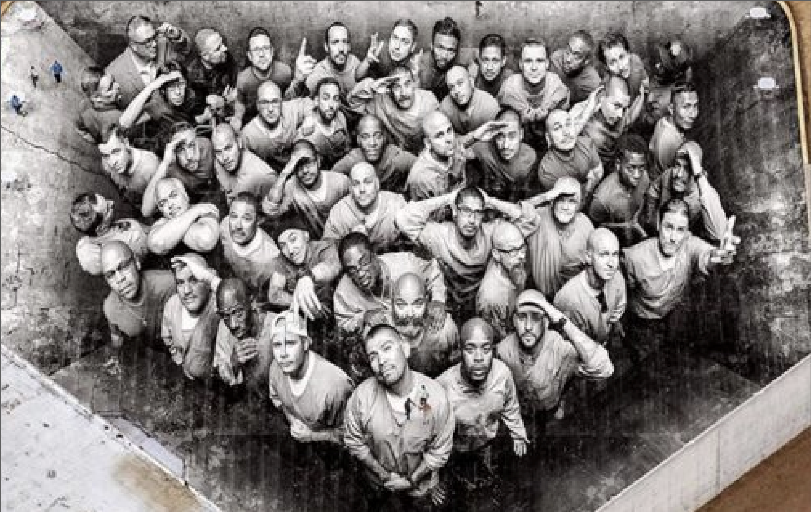
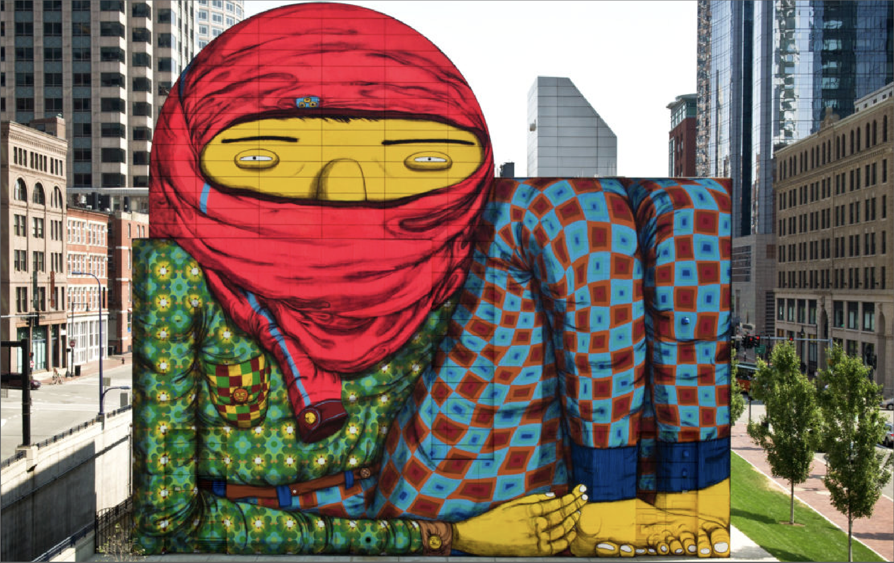
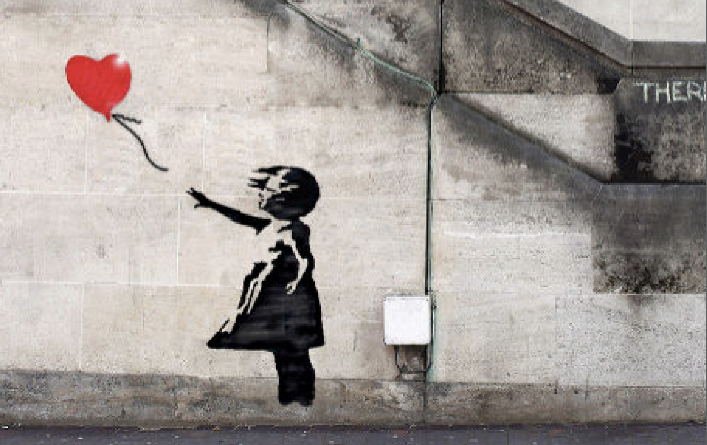
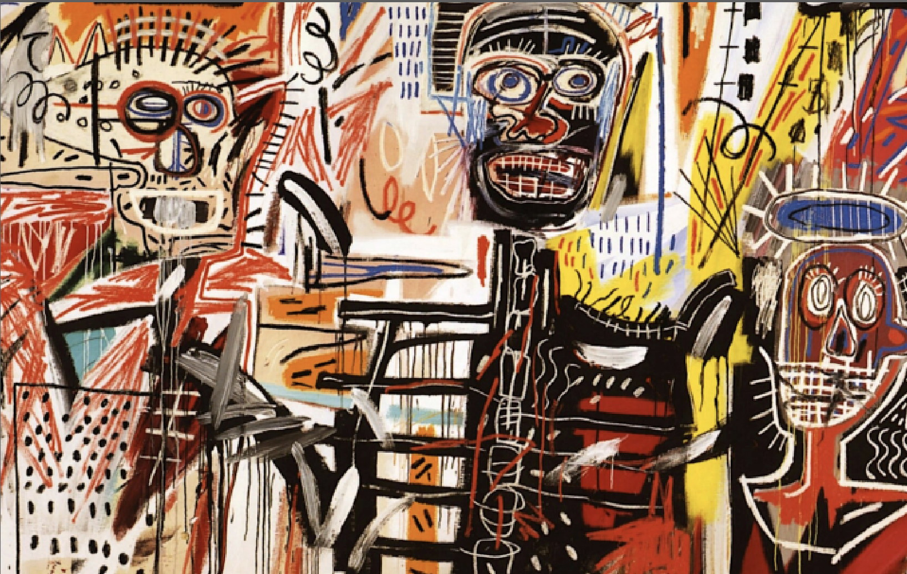
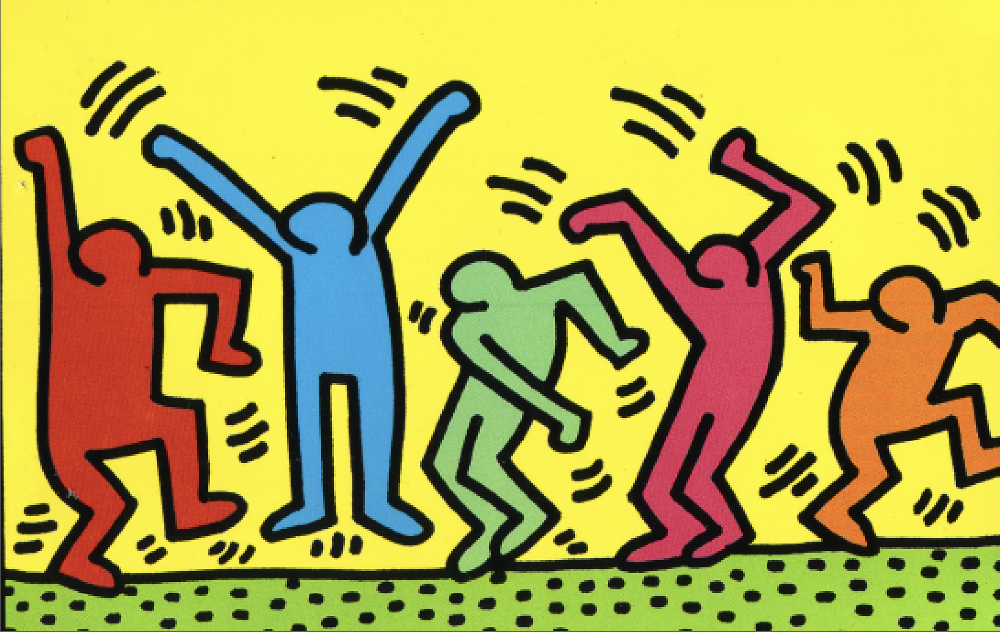
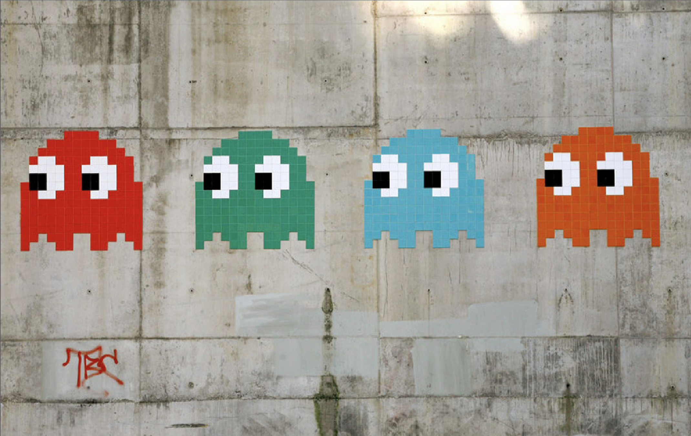
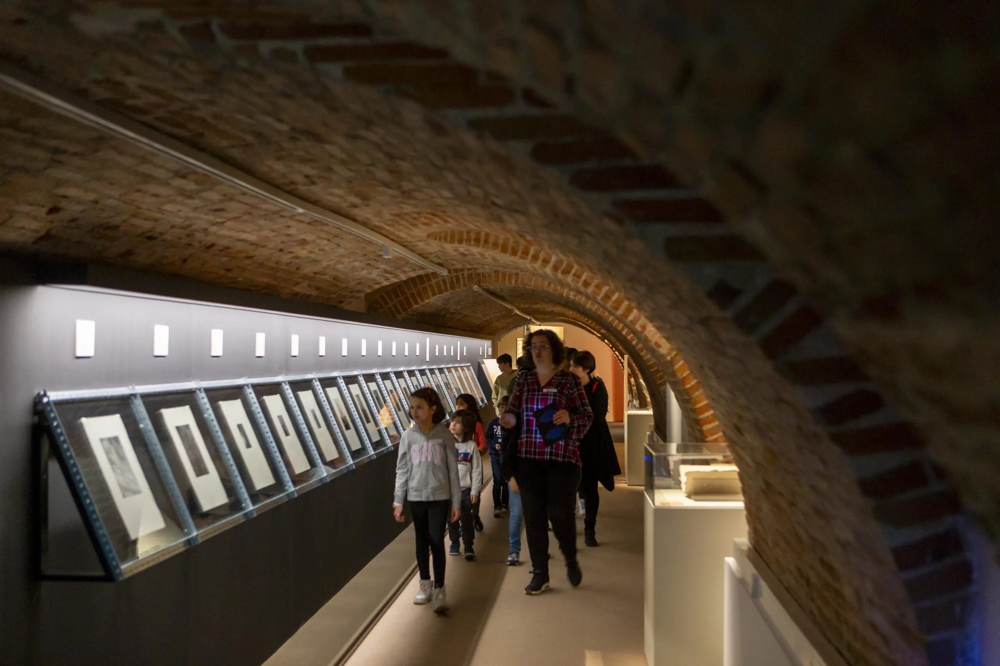
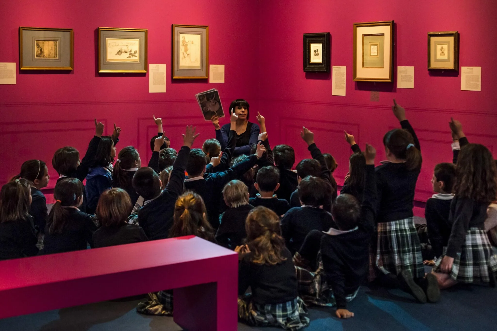

Arte Urbano. De los orígenes a Banksy es una exposición organizada por Fundación Canal que explora la evolución del arte urbano desde sus comienzos en las calles hasta convertirse en uno de los movimientos artísticos más influyentes de la actualidad. A través de diferentes obras y estilos, la muestra refleja cómo el graffiti y el street art han transformado la manera de entender el arte contemporáneo.
La exposición reúne artistas icónicos como Banksy, Keith Haring, Jean-Michel Basquiat y JR, mostrando piezas que combinan creatividad, crítica social y cultura urbana. Con una propuesta visual inmersiva y dinámica, la experiencia busca conectar al público con la energía y la identidad visual característica del arte callejero.

